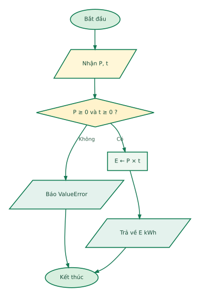

Khóa học / Mô-đun 2 / Bài 05
01 Mục tiêu và kiến thức tiên quyết
- Phân biệt tham số khi định nghĩa với đối số khi gọi hàm.
- Thiết kế hàm nhận công suất/thời gian và trả về điện năng, có xác thực dữ liệu.
- Tổ chức chương trình theo chức năng và kiểm thử hàm độc lập.
Kiến thức tiên quyết: bài trước, kiến thức lập trình tương ứng.
02 Tình huống kỹ thuật
Một chương trình giám sát cần tính điện năng cho nhiều tải khác nhau. Thay vì sao chép công thức ở nhiều vị trí, sinh viên thiết kế hàm có đầu vào, đầu ra và điều kiện áp dụng rõ ràng.
P (kW) và t (h), ví dụ 1,5 kW và 3 h.
E (kWh) = 4,5 và các thông báo lỗi có ý nghĩa.
03 Kiến thức và thuật ngữ cốt lõi
Phân rã chương trình
Một hàm nên đảm nhiệm một trách nhiệm rõ ràng. Hàm được định nghĩa bằng def; đoạn thân chỉ chạy khi được gọi, không chạy ngay lúc định nghĩa.
Tham số và kết quả
Tham số là tên tại phần định nghĩa; đối số là dữ liệu truyền vào khi gọi. return kết thúc lời gọi và trả về giá trị; hàm không thực hiện return tường minh có kết quả None.
Hợp đồng của hàm
Với hàm tính điện năng, công suất phải không âm, thời gian không âm, đơn vị kW và giờ. Nêu rõ điều kiện bằng docstring và kiểm chứng bằng test.
Hàm thuần
Khi có thể, viết hàm không sửa dữ liệu bên ngoài: cùng đầu vào cho cùng kết quả. Cách này giúp kiểm thử độc lập và tái sử dụng trong các bài sau.
04 Xây dựng và kiểm tra thuật toán
Trước khi xem chương trình, hãy đọc dữ liệu đầu vào, chọn điều kiện rẽ nhánh hoặc lặp, rồi dự đoán kết quả. Mã giả mô tả ý nghĩa thuật toán; không phải cú pháp Python thực thi được.

Mã giả
Lần vết các bước phân tích
Đây là lần vết các dòng mã giả, không phải trình thông dịch Python. Tự kiểm tra nhánh điều kiện bằng bảng ca kiểm thử ở mục 07.
05 Chương trình Python đã kiểm tra
Đọc mã, dự đoán kết quả và chạy tệp bai_05.py trong thư mục code. Các mã bài 9 trở lên có thể cần dữ liệu đi kèm từ thư mục data.
def dien_nang_kwh(cong_suat_kw: float, gio: float) -> float:
"""Tinh dien nang kWh; P >= 0 kW, gio >= 0 h."""
if cong_suat_kw < 0 or gio < 0:
raise ValueError("Cong suat va thoi gian phai khong am")
return cong_suat_kw * gio
ket_qua = dien_nang_kwh(1.5, 3.0)
assert abs(ket_qua - 4.5) < 1e-12
print(f"E = {ket_qua:.2f} kWh")
06 Thử nghiệm tham số có hướng dẫn
Thay đổi đầu vào để kiểm tra trực giác và đối chiếu với kết quả dự đoán. Trình khám phá này được lập trình lại bằng JavaScript theo bài toán minh họa, không phải kết quả chạy mã Python.
07 Thực hành và kiểm thử
Thực hiện các nhiệm vụ theo thứ tự từ có hướng dẫn đến độc lập; ghi lại kết quả thực tế của chương trình và so sánh với kết quả kỳ vọng.
- Tách một chương trình thành hàm nhập dữ liệu, hàm tính toán và hàm in kết quả.
- Viết thêm hàm chuyển Wh sang kWh và kiểm thử với 0, 1000, 2500 Wh.
- Thực hiện ít nhất ba phép assert có mục đích rõ ràng.
Bảng kiểm thử bắt buộc
| Ca kiểm thử | Dữ liệu/điều kiện | Kết quả kỳ vọng |
|---|---|---|
| Điển hình | f(1.5,3) | 4,5 kWh |
| Không vận hành | f(1.5,0) | 0 kWh |
| Không tải | f(0,3) | 0 kWh |
| Đầu vào không hợp lệ | f(-1,3) | ValueError |
08 Vận dụng vào chuyên ngành
Dùng hàm để tái sử dụng phép tính điện năng từ nhiều thiết bị lạnh.
Dùng hàm tính điện năng cấp cho tải phụ ô tô từ các khoảng vận hành.
09 Trắc nghiệm và phản hồi
Mỗi câu có bốn phương án A/B/C/D. Chọn một phương án cho mỗi câu rồi nhấn Chấm và giải thích để xem vì sao từng phương án đúng hoặc chưa phù hợp.
Rubric tham khảo (100 điểm)
| Thành phần | Điểm |
|---|---|
| Đặc tả dữ liệu, đơn vị, giả thiết | 20 |
| Mã giả, trình tự thuật toán | 20 |
| Mã Python và tổ chức hàm/dữ liệu | 25 |
| Kiểm thử, đối chiếu, phân tích sai số | 25 |
| Giải thích và đề xuất cải tiến | 10 |
10 Nhật ký học tập và đánh dấu tiến độ
Tiến độ và ghi chép chỉ lưu trong trình duyệt hiện tại; không đồng bộ với hệ thống điểm của trường.
11 Tài liệu tham khảo và nguồn
| Nguồn | Vai trò và phạm vi sử dụng |
|---|---|
| Pythonlearn-04-Functions.pptx | C. Severance, Python for Everybody — Chương 4, định nghĩa và gọi hàm. |
| BAI THUC HANH PYTHON CO BAN 2022.pdf | Khoa CNTT, bài thực hành Python cơ bản — nhập/xuất, điều khiển, dữ liệu, hàm và tổng hợp. |
| Python 3 Documentation | Tài liệu chuẩn của ngôn ngữ Python 3. |
Học liệu mới được viết lại theo định hướng sư phạm. Không trích lại nguyên văn hoặc phân phối các slide/sách gốc trong gói website.